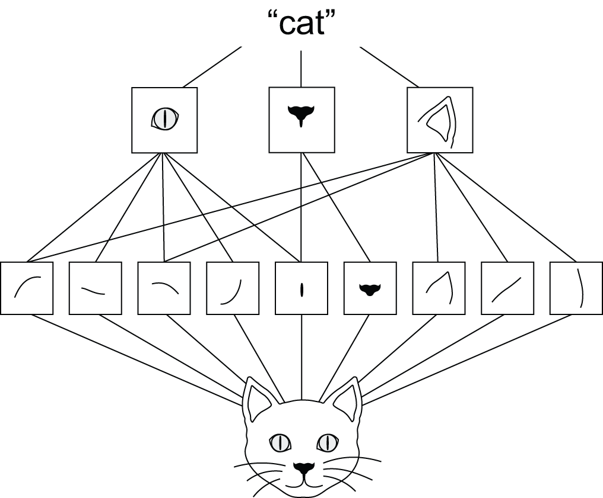
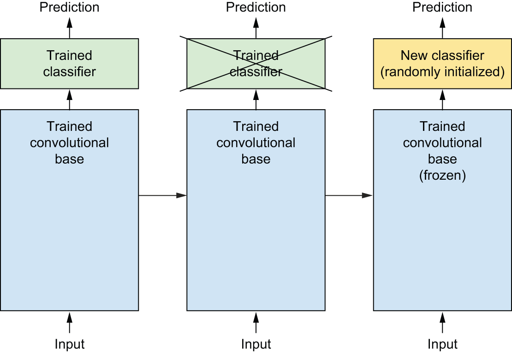

valid vs same): control border shrinkage vs keeping spatial size| Layer (type) | Output shape | Param # |
|---|---|---|
| input_layer_2 (InputLayer) | (None, 180, 180, 3) | 0 |
| rescaling (Rescaling) | (None, 180, 180, 3) | 0 |
| conv2d_6 (Conv2D) | (None, 178, 178, 32) | 896 |
| max_pooling2d_2 (MaxPooling2D) | (None, 89, 89, 32) | 0 |
| conv2d_7 (Conv2D) | (None, 87, 87, 64) | 18,496 |
| max_pooling2d_3 (MaxPooling2D) | (None, 43, 43, 64) | 0 |
| conv2d_8 (Conv2D) | (None, 41, 41, 128) | 73,856 |
| max_pooling2d_4 (MaxPooling2D) | (None, 20, 20, 128) | 0 |
| conv2d_9 (Conv2D) | (None, 18, 18, 256) | 295,168 |
| max_pooling2d_5 (MaxPooling2D) | (None, 9, 9, 256) | 0 |
| conv2d_10 (Conv2D) | (None, 7, 7, 512) | 1,180,160 |
| global_average_pooling2d_2 (GlobalAveragePooling2D) | (None, 512) | 0 |
| dense_2 (Dense) | (None, 1) | 513 |
filters * (kernel_size^2 * input_channels + 1) (the +1 is for the bias term)
For example, the first Conv2D layer has 32 filters, a kernel size of 3x3, and 3 input channels (RGB):
32 * (3^2 * 3 + 1) = 32 * (27 + 1) = 32 * 28 = 896
